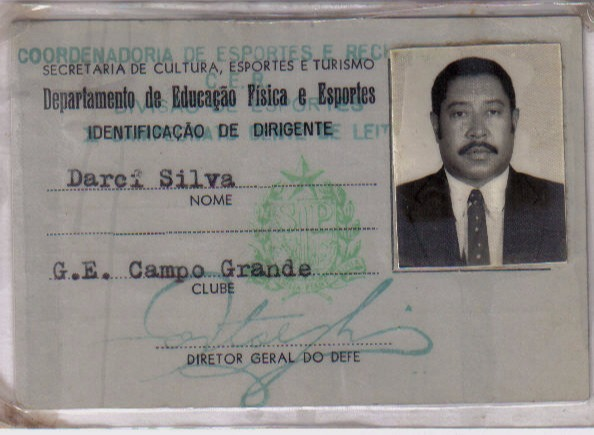
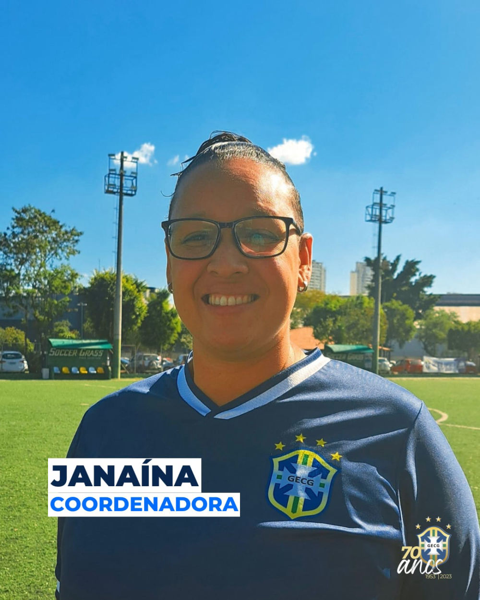
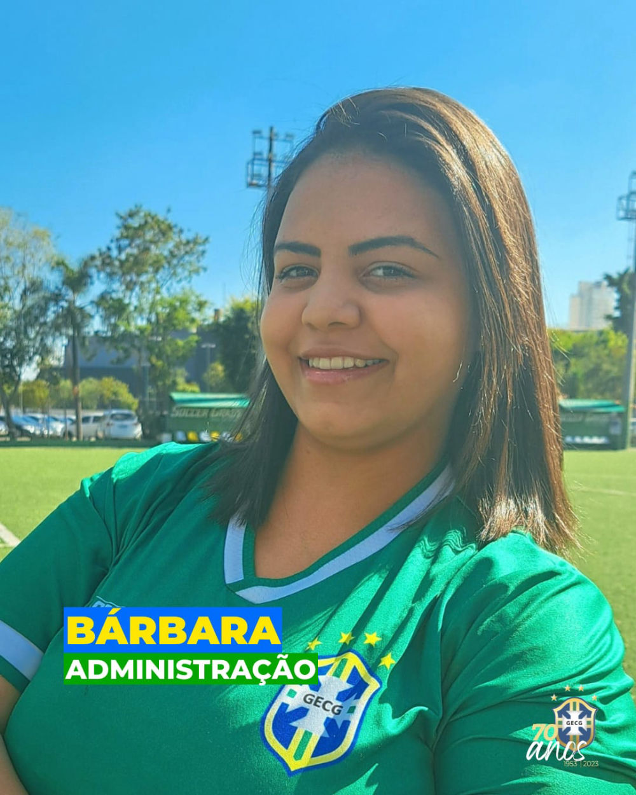
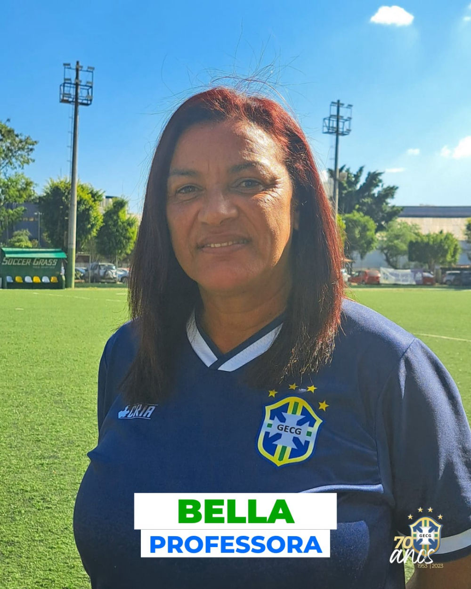
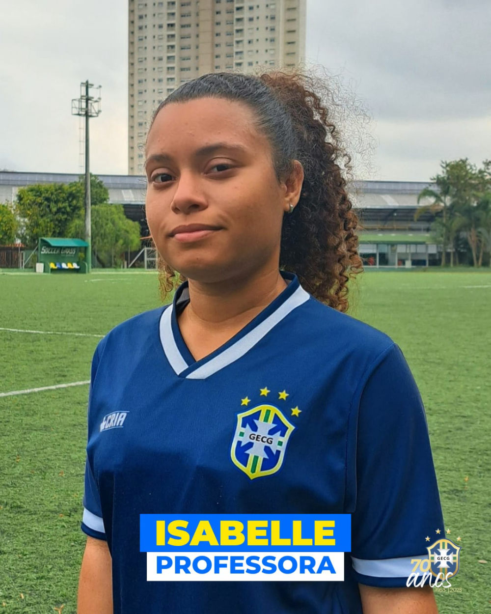
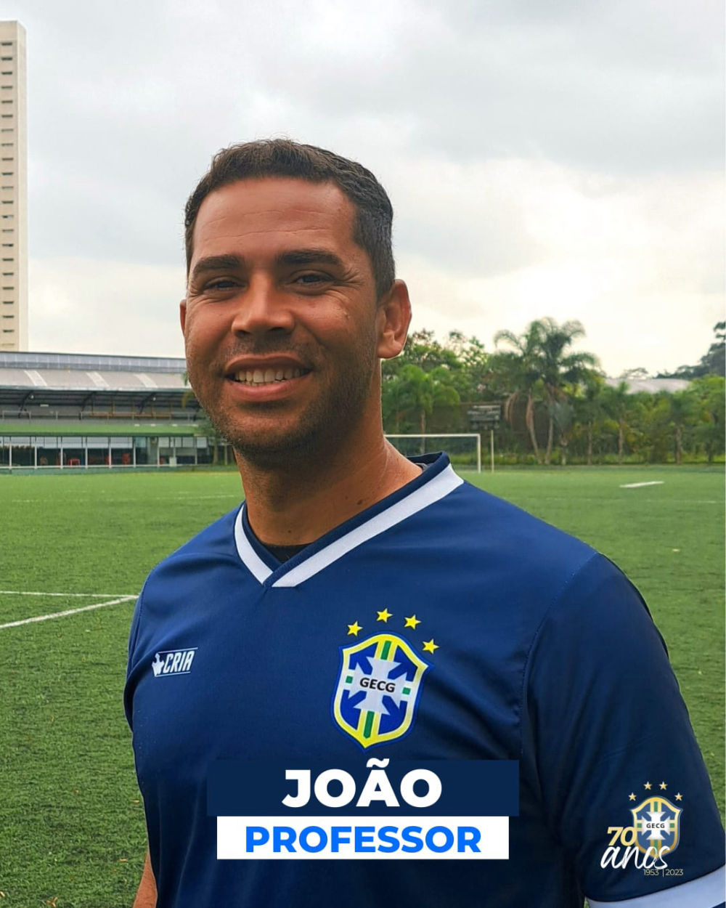
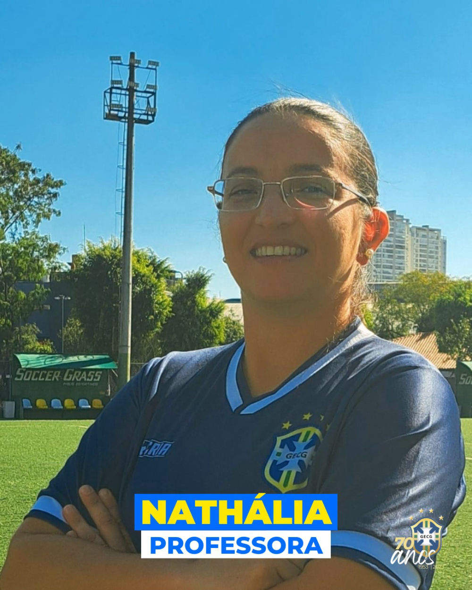

Nossa história
CDC Maria Felizarda da Silva
Uma história que começou com o sonho de Seu Darci Silva e cresceu junto com o bairro de Campo Grande.

Desde 1953
Da várzea do Rio Pinheiros a um clube da comunidade
A história começa em 1953, quando Seu Darci Silva realizou o sonho de fundar um clube de futebol na área de várzea do Rio Pinheiros. O bairro Campo Grande deu origem ao nome do Grêmio, na região hoje também conhecida como Jurubatuba.
Em 1982, a parceria com a Secretaria de Esportes transformou o espaço no Clube Desportivo Municipal Maria Felizarda da Silva, homenagem à mãe do fundador. Em 2005, passou a ser CDC — Clube da Comunidade.
O projeto Clube Escola chegou em 2007. O espaço passou a atender centenas de alunos em modalidades esportivas e atividades para a terceira idade, preservando também o futebol de campo do Grêmio aos sábados.
Estrutura
Um espaço que mudou sem perder suas raízes
Onde antes existia a várzea, hoje o clube conta com campos sintéticos, ambientes de treinamento e áreas de convivência.
Atividades do CDC
Esporte e bem-estar para a comunidade


Atividades e cursos
Programas esportivos e ações voltadas para diferentes faixas etárias.
Consultar atividadesNossa equipe
Quem ajuda o clube a acontecer
Pessoas apresentadas no acervo institucional do site atual.
Equipe GECG
Clube

Janaina
Equipe GECG

Barbara
Equipe GECG

Erenilde
Administração

Guilherme
Comunicação

Bella
Equipe GECG

Isabeli
Equipe GECG

João
Equipe GECG

Luciana
Professora

Nathalia
Equipe GECG

Wallaci
Professor
Conheça de perto
Venha visitar o CDC
Consulte horários, turmas disponíveis e informações sobre inscrições.